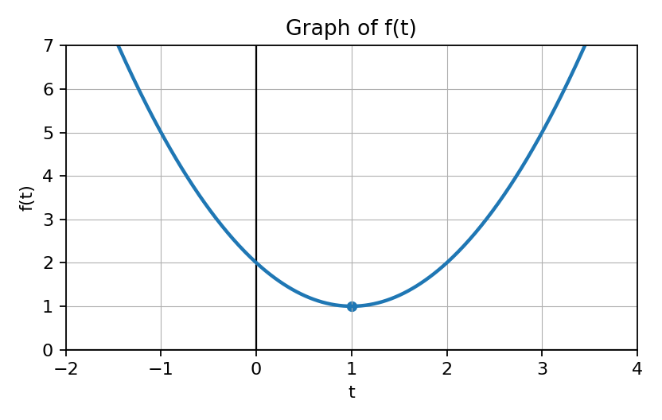

Show work and write reasoning clearly. Use correct calculus notation and AP-style justification.
For $g(x)=\int_1^x f(t)\,dt$, identify $g^{\prime}(x)$ using FTC Part 1.
Show work and write reasoning clearly. Use correct calculus notation and AP-style justification.

If $G(x)=\int_0^x f(t)\,dt$, identify where $G^{\prime}(x)$ is smallest from the graph of $f$.
Show work and write reasoning clearly. Use correct calculus notation and AP-style justification.
Complete: If $A(x)=\int_3^x h(t)\,dt$, then $A^{\prime}(x)=...$
Show work and write reasoning clearly. Use correct calculus notation and AP-style justification.
Decide whether $\dfrac{d}{dx}\int_2^x \sin(t)\,dt$ requires FTC Part 1, FTC Part 2, or a Riemann sum.
Show work and write reasoning clearly. Use correct calculus notation and AP-style justification.
State how the sign of $f(x)$ affects whether $g(x)=\int_a^x f(t)\,dt$ is increasing or decreasing.
Show work and write reasoning clearly. Use correct calculus notation and AP-style justification.
Identify the derivative of $H(x)=\int_0^{x^2} f(t)\,dt$ as needing FTC Part 1 plus the chain rule.